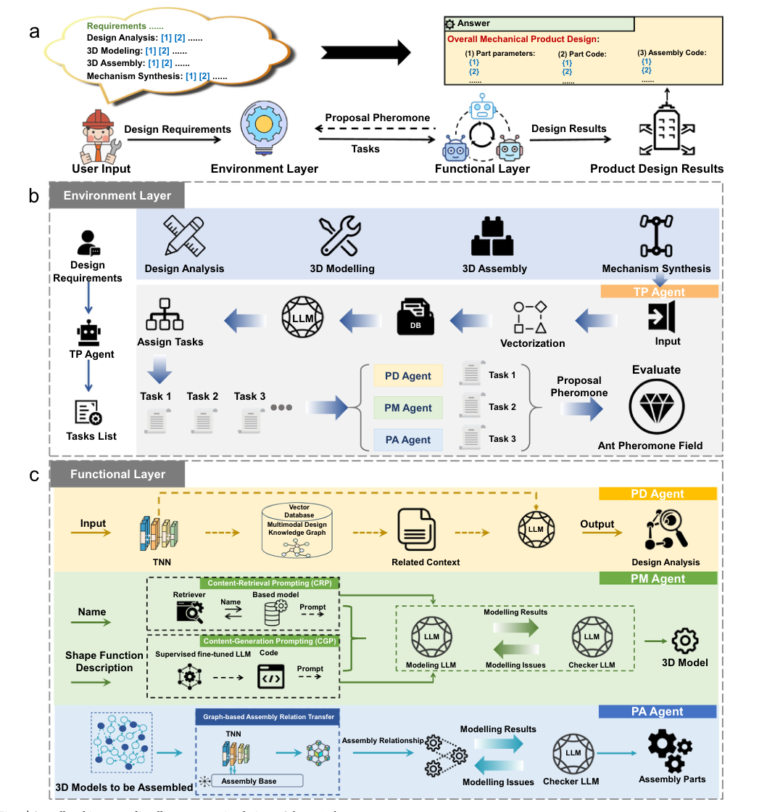
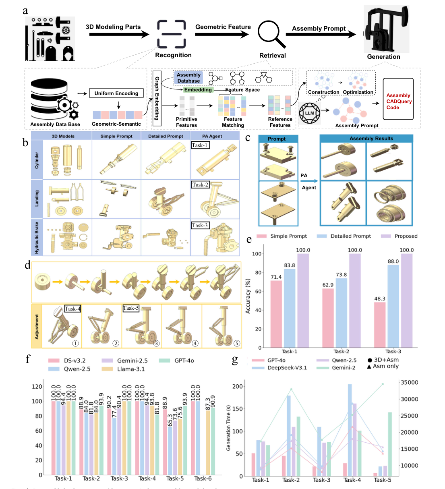
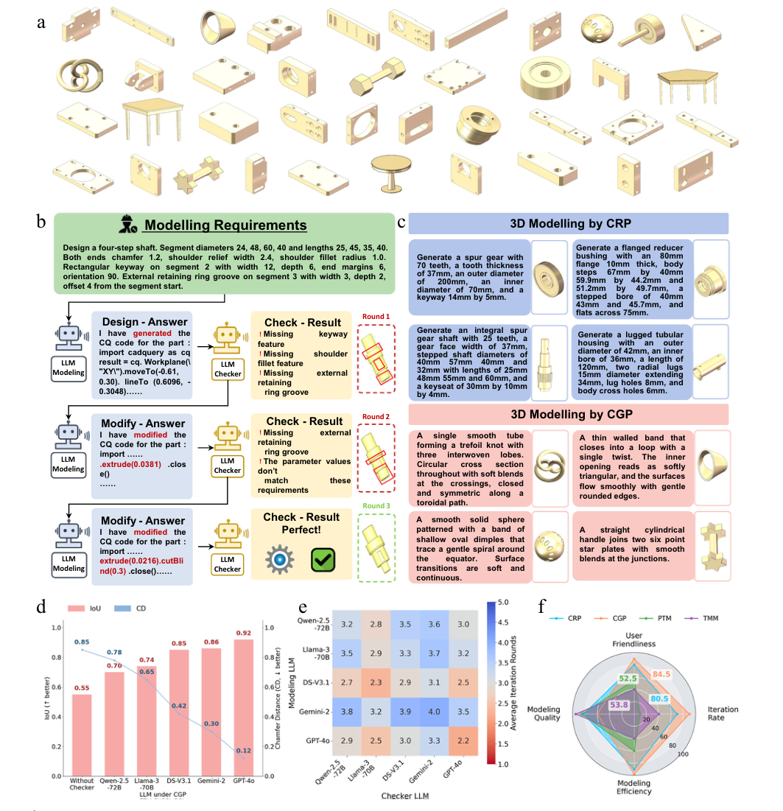
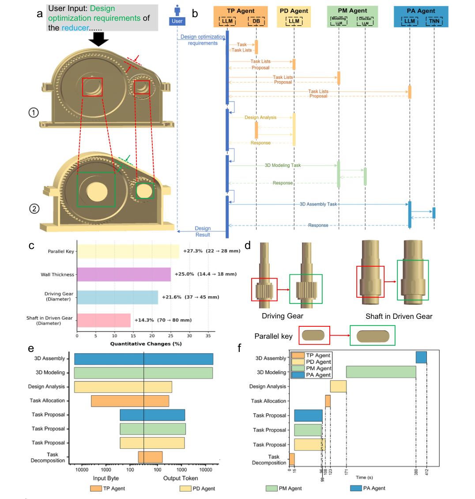
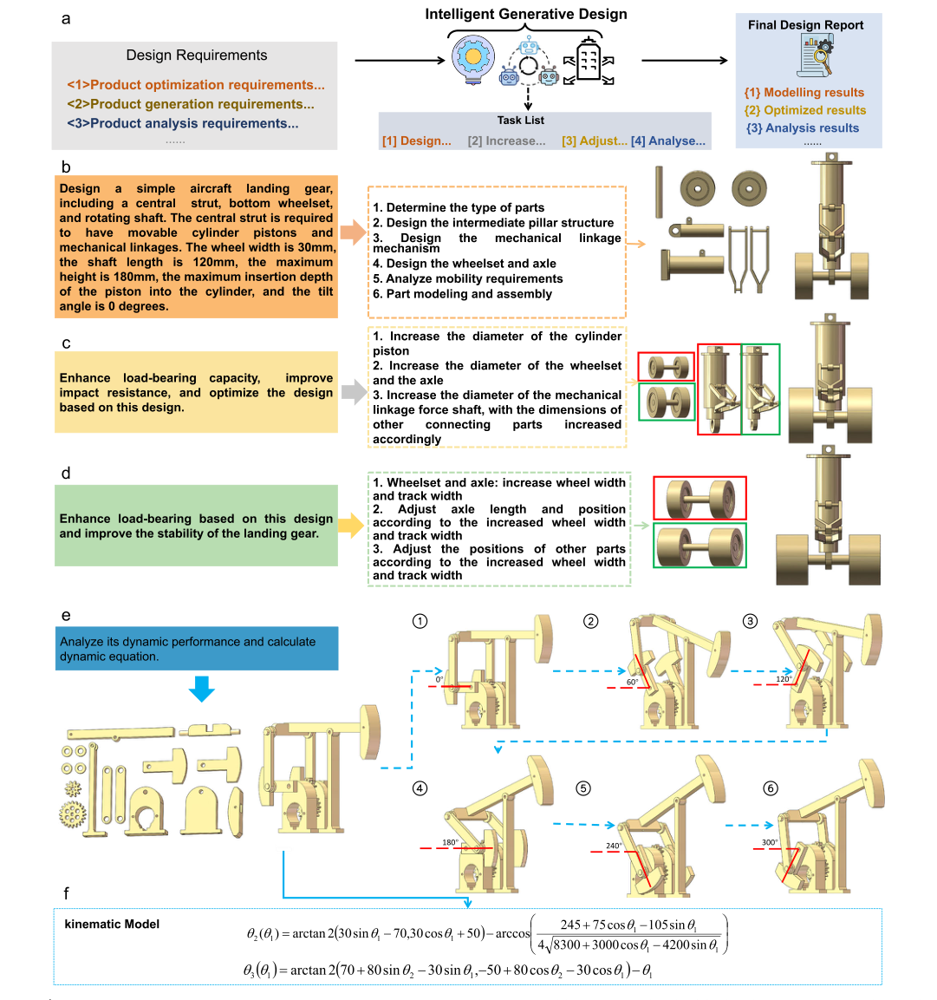

论文资料
Intelligent generative design framework for semantic driven mechanical design
尚未取得可核实的完整摘要或全文
尚未取得可核实的完整摘要或全文。取得完整资料并通过核验后，这个地址会更新为图文解读。
原图未改动。以下图注来自标注的来源，不据此补写摘要未报告的实验结论。
已取得的论文原图


原文图注与出处
Fig. 1 | Overall architecture of intelligent generative design. a Schematic diagram of the intelligent generative design (IGD) framework architecture, which integrates large language models (LLMs), task-specific neural networks (TNNs), multimodal engineering knowledge, and specialised design agents for automated mechanical design. b Schematic diagram of the working principle of the task planning (TP) agent in the environment layer, where LLMs interpret natural-language requirements and
Shi, Yan et al.
原文图页 · CC BY-NC-ND 4.0

原文图注与出处
Fig. 3 | 3D assembly by the part assembly agent. a Architecture of the graph-based assembly relation transfer (GART) method. b Comparison of assembly results obtained using different prompts. c Assembly prompts and corresponding assembly results. d Step-by-step assembly of the landing-gear device and adjustment of the specified assembly positions: (1) spindle tilted forward by 30°; (2) spindle tilted backward by 30°; (3) landing-gear assembly at the minimum travel position, with a stroke of 0 mm; (4) landing-gear assembly at the mid-travel position, with a stroke of 34 mm; and (5) landing-gear assembly at the maximum travel position, with a stroke
Shi, Yan et al.
原文图页 · CC BY-NC-ND 4.0

原文图注与出处
Fig. 2 | 3D modelling by the part modelling agent. a Three-dimensional (3D) modelling results of parts generated by the part modelling (PM) agent. b An iterative 3D modelling workflow driven by two collaborating large language models (LLMs). c 3D modelling results obtained using the content-generation prompting (CGP) and content-retrieval prompting (CRP) methods. d Comparison of intersection over union (IoU) and Chamfer distance (CD) values for CGP modelling under different LLM configurations, including supervised fine-tuning (SFT)-only modelling with- out a checker and various modelling LLMs paired with an LLM checker. Here, DS-
Shi, Yan et al.
原文图页 · CC BY-NC-ND 4.0

原文图注与出处
Fig. 5 | A mechanical device optimisation designed by intelligent generative design. a Three-dimensional (3D) part models and assembly generated by the intelligent generative design (IGD) framework for an optimisation design task. b Optimisation design task flow of the task planning (TP), part design (PD), part modelling (PM), and part assembly (PA) agents during execution of the design task. The framework integrates large language models (LLMs), supervised fine-tuned large language models (SFT LLMs), task-specific neural networks (TNNs), and knowledge databases (DBs) to support agent reasoning and design execution.
Shi, Yan et al.
原文图页 · CC BY-NC-ND 4.0已取得的论文原图


原文图注与出处
Fig. 6 | More cases of mechanical designs by intelligent generative design. a Inputs and outputs of the intelligent generative design (IGD) framework design. b–d Design and structural optimisation for an aircraft landing gear task. e IGD performs kinematic analysis for the 3D assembly of a complete beam pump mechanical device. (1–6) are the results of the motion analysis, showing the beam pump structure diagrams under different specified angles of the drive lever and
Shi, Yan et al.
原文图页 · CC BY-NC-ND 4.0